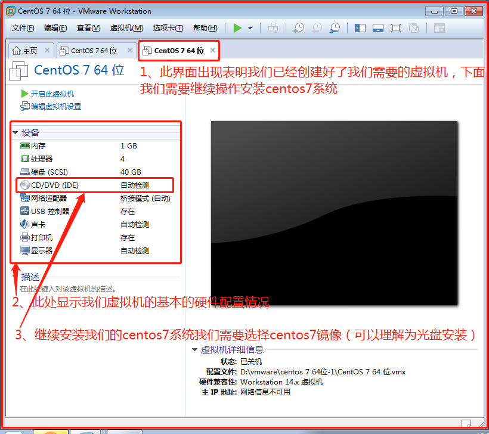
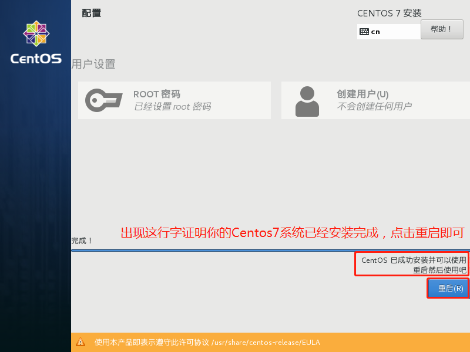
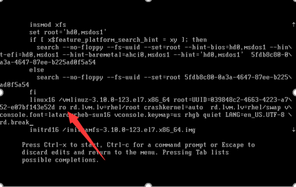

原文连接:https://www.cnblogs.com/passzhang/p/12077884.html
linux系统入门简介
我们为什么要学习Linux？
在介绍Linux的历史前，我想先针对大家如何对Linux的发音说一下。我发现我身边的朋友对Linux的发音大致有这么几种： “里那克斯”与 “里泥克斯”“里扭克斯”等。其实官方的标准发音为 [‘li:nэks]，因为这个发音是创始人Linus的发音。如果你不认识这个音标，那么就读成“里那克斯”。而咱们习惯发音成“里泥克斯”，当然你发音成什么，并没有人会说你，完全是一个人的习惯而已。
Linux和unix是非常像的。没错，Linux就是根据unix演变过来的。当年linus就是因为接触到了unix而后才自己想开发一个简易的系统内核的，他开发的简易系统内核其实就是Linux。当时linus把开发的这个系统内核丢到网上提供大家下载，由于它的精致小巧，越来越多的爱好者去研究它。人们对这个内核添枝加叶，而后成为了一个系统。也许你听说过吧，Linux是免费的。其实这里的免费只是说Linux的内核免费。在Linux内核的基础上而产生了众多Linux的版本。
学习Linux能做什么？
当今世界流行的操作系统有3大类，Linux、Mac OS和Windows操作系统，Linux操作系统因其开源、免费、跨平台、良好的界面等特性，深受广大程序员们的青睐！
Linux操作系统被广泛的应用于企业服务器领域，目前市场上的网络设备都是使用Linux内核操作系统，一些网络服务器也是使用Linux操作系统下面的服务搭建实现的，目前操作系统这块也基本被Linux占据，使用Linux的iptables功能可以做代理服务器和防火墙;使用samba服务的功能可以做搭建和打印共享服务器。使用Linux下的nginx+mysql+php搭建web、Linux下的vsftp服务作为FTP文件传输服务器，使用Linux下bind服务做域名解析服务器，使用Linux下DHCP服务做网络中地址分配服务器，使用Linux下openvpn服务实现VPN服务器，使用Linux下sendmai和qmail服务搭建邮件服务器，使用Linux下的NFS和iSCSI搭建网络存储服务器等，Linux在企业应用范围极广。
Linux支持多用户，各个用户对于自己的文件设备有自己特殊的权利，保证了各用户之间互不影响。多任务则是现在电脑最主要的一个特点，Linux可以使多个程序同时并独立地运行。在的网络设备一般都是Linux操作系统，比如：软防火墙、软路由、软监控、云计算等，这些都是使用Linux内核开发的。Linux操作系统安全性和稳定性高，目前android系统、银行系统、企业WEB服务器、虚拟化、等都是使用Linux操作系统。Linux操作系统在市场上得到了广泛的应用，市场上80%的服务器用户在使用Linux操作系统，因此，学好Linux可以有很多就业选择，而且喜爱技术的人员来说，也是一种成就！
开源共享精神
开源软件的特点就是把软件程序与源代码文件一起打包提供给用户，让用户在不受限制地使用某个软件功能的基础上还可以按需进行修改，或编制成衍生产品再发布出去。用户具有使用自由、修改自由、重新发布自由以及创建衍生品的自由。这也正好符合了黑客和极客对自由的追求，因此国内外开源社区的根基都很庞大，人气也相当高。
坦白来讲，每位投身于Linux行业的技术人或者程序员只要听到开源项目就会由衷地感到自豪，这是一种从骨子里带有的独特情怀。开源的企业不单纯是为了利益，而是互相扶持，努力服务好更多的用户。开源软件最重要的特性有下面这些。
低风险：使用闭源软件无疑把命运交付给他人，一旦封闭的源代码没有人来维护，你将进退维谷；而且相较于商业软件公司，开源社区很少存在倒闭的问题。
高品质：相较于闭源软件产品，开源项目通常是由开源社区来研发及维护的，参与编写、维护、测试的用户量众多，一般的bug还没有等爆发就已经被修补。
低成本：开源工作者都是在幕后默默且无偿地付出劳动成果，为美好的世界贡献一份力量，因此使用开源社区推动的软件项目可以节省大量的人力、物力和财力。
更透明：没有哪个笨蛋会把木马、后门等放到开放的源代码中，这样无疑是把自己的罪行暴露在阳光之下。
但是，如果开源软件为了单纯追求“自由”而牺牲程序员的利益，这将会影响程序员的创造激情，因此世界上现在有60多种被开源促进组织（Open Source Initiative）认可的开源许可协议来保证开源工作者的权益。对于那些只知道一味抄袭、篡改、破解或者盗版他人作品的不法之徒，终归会在某一天收到法院的传票。对于准备编写一款开源软件的开发人员，也非常建议先了解一下当前最热门的开源许可协议，选择一个合适的开源许可协议来最大限度保护自己的软件权益。
GNU GPL（GNU General Public License，GNU通用公共许可证）：只要软件中包含了遵循GPL协议的产品或代码，该软件就必须也遵循GPL许可协议且开源、免费，因此这个协议并不适合商用软件。遵循该协议的开源软件数量极其庞大，包括Linux系统在内的大多数的开源软件都是基于这个协议的。GPL开源许可协议最大的4个特点如下所示。
复制自由：允许把软件复制到任何人的电脑中，并且不限制复制的数量。
传播自由：允许软件以各种形式进行传播。
收费传播：允许在各种媒介上出售该软件，但必须提前让买家知道这个软件是可以免费获得的；因此，一般来讲，开源软件都是通过为用户提供有偿服务的形式来盈利的。
修改自由：允许开发人员增加或删除软件的功能，但软件修改后必须依然基于GPL许可协议授权。
BSD（Berkeley Software Distribution，伯克利软件发布版）许可协议：用户可以使用、修改和重新发布遵循该许可的软件，并且可以将软件作为商业软件发布和销售，前提是需要满足下面3个条件。

1：如果再发布的软件中包含源代码，则源代码必须继续遵循BSD许可协议。
2：如果再发布的软件中只有二进制程序，则需要在相关文档或版权文件中声明原始代码遵循了BSD协议。
3：不允许用原始软件的名字、作者名字或机构名称进行市场推广。
Apache许可证版本（Apache License Version）许可协议：在为开发人员提供版权及专利许可的同时，允许用户拥有修改代码及再发布的自由。该许可协议适用于商业软件，现在热门的Hadoop、Apache HTTP Server、MongoDB等项目都是基于该许可协议研发的，程序开发人员在开发遵循该协议的软件时，要严格遵守下面的4个条件。
1：该软件及其衍生品必须继续使用Apache许可协议。
2：如果修改了程序源代码，需要在文档中进行声明。
3：若软件是基于他人的源代码编写而成的，则需要保留原始代码的协议、商标、专利声明及其他原作者声明的内容信息。
4：如果再发布的软件中有声明文件，则需在此文件中标注Apache许可协议及其他许可协议。
MPL（Mozilla Public License，Mozilla公共许可）许可协议：相较于GPL许可协议，MPL更加注重对开发者的源代码需求和收益之间的平衡。
MIT（Massachusetts Institute of Technology）许可协议：目前限制最少的开源许可协议之一，只要程序的开发者在修改后的源代码中保留原作者的许可信息即可，因此普遍被商业软件所使用。
Linux系统操作系统发展简史
早在20世纪70年代，UNIX系统是开源而且免费的。但是在1979年时，AT&T公司宣布了对UNIX系统的商业化计划，随之开源软件业转变成了版权式软件产业，源代码被当作商业机密，成为专利产品，人们再也不能自由地享受科技成果。
于是在1984年，Richard Stallman面对于如此封闭的软件创作环境，发起了GNU源代码开放计划并制定了著名的GPL许可协议。1987年时，GNU计划获得了一项重大突破—gcc编译器发布，这使得程序员可以基于该编译器编写出属于自己的开源软件。随之，在1991年10月，芬兰赫尔辛基大学的在校生Linus Torvalds编写了一款名为Linux的操作系统。该系统因其较高的代码质量且基于GNU GPL许可协议的开放源代码特性，迅速得到了GNU计划和一大批黑客程序员的支持。随后Linux系统便进入了如火如荼的发展阶段。
1994年1月，Bob Young在Linux系统内核的基础之上，集成了众多的源代码和程序软件，发布了红帽系统并开始出售技术服务，这进一步推动了Linux系统的普及。1998年以后，随着GNU源代码开放计划和Linux系统的继续火热，以IBM和Intel为首的多家IT企业巨头开始大力推动开放源代码软件的发展。到了2017年年底，Linux内核已经发展到了4.13版本，并且Linux系统版本也有数百个之多，但它们依然都使用Linus Torvalds开发、维护的Linux系统内核。RedHat公司也成为了开源行业及Linux系统的带头公司。
在讲课时，我经常会问同学们一个问题：“为什么学习Linux系统？”很多学生为了让我高兴，直接就说“因为Linux系统是开源的，所以要去学习”。其实这个想法是完全错误的！开源的操作系统少说有100个，开源的软件至少也有十万个，为什么不去逐个学习？所以上面谈到的开源特性只是一部分优势，并不足以成为您付出精力去努力学习的理由。
对于用户来讲，开源精神仅具备锦上添花的效果，因此正确的学习动力应该源自于：Linux系统是一款优秀的软件产品，具有类似UNIX的程序界面，而且继承了UNIX的稳定性，能够较好地满足工作需求。
大多数读者应该都是从微软的Windows系统开始了解计算机和网络的，因此肯定会有这样的想法“Windows系统很好用啊，而且也可足以满足日常工作需求呀”。客观来讲，Windows系统确实很优秀，但是在安全性、高可用性与高性能方面却难以让人满意。您应该见过下面这张图片。

想必读者现在已经能猜到，为什么要在需要长期稳定运行的网站服务器上、在处理大数据的集群系统中以及需要协同工作的环境中采用Linux系统了。通过下图也可以看出Linux系统相较于Windows系统的具体优势。
常见的Linux系统版本
在介绍常见的Linux系统版本之前，首先需要区分Linux系统内核与Linux发行套件系统的不同。Linux系统内核指的是一个由Linus Torvalds负责维护，提供硬件抽象层、硬盘及文件系统控制及多任务功能的系统核心程序。而Linux发行套件系统是我们常说的Linux操作系统，也即是由Linux内核与各种常用软件的集合产品。全球大约有数百款的Linux系统版本，每个系统版本都有自己的特性和目标人群，下面将可以从用户的角度选出最热门的几款进行介绍。
Linux的发行版说简单点就是将Linux内核与应用软件做一个打包。较知名的发行版有：Ubuntu、RedHat、CentOS、Debain、Fedora、SuSE、OpenSUSE、TurboLinux、BluePoint、RedFlag、Xterm、SlackWare等
红帽企业系统（RedHatEnterpriseLinux,rhel.）
红帽公司是全球最大的开源技术厂商，rhel是全世界内使用最广泛的Linux系统。
rhel系统具有极强的性能与稳定性，并且在全球范围内拥有完善的技术支持。rhel系统也是本书、红帽认证以及众多生产环境中使用的系统。
社区企业操作系统（Community Enterprise Operating System，CentOS）
通过把CENTOS系统重新编译并发布给用户免费使用的Linux系统，具有广泛的使用人群。CentOS当前已被红帽公司“收编”。
而咱们常用的就是Redhat 和 CentOS，这里有必要说一下，其实CentOS是基于Redhat的，网上有人说，Centos是Redhat企业版的克隆。咱们所在公司的服务器全部都是安装CentOS系统，并且相当稳定。CentOS较之于Redhat 可以免费使用yum 下载安装所需要的软件包，这个是相当方便的。而Redhat要想使用yum必须要购买服务了。

Fedora
由红帽公司发布的桌面版系统套件（目前已经不限于桌面版）。
用户可免费体验到最新的技术或工具，这些技术或工具在成熟后会被加入到CENTOS系统中，因此Fedora也称为CENTOS系统的“试验田”。
运维人员如果想时刻保持自己的技术领先，就应该多关注此类Linux系统的发展变化及新特性，不断改变自己的学习方向。
openSUSE
源自德国的一款著名的Linux系统，在全球范围内有着不错的声誉及市场占有率。

Gentoo
具有极高的自定制性，操作复杂，因此适合有经验的人员使用。读者可以在学习完本书后尝试一下该系统。
Debian
稳定性、安全性强，提供了免费的基础支持，可以良好地支持各种硬件架构，以及提供近十万种不同的开源软件，在国外拥有很高的认可度和使用率。
Ubuntu
是一款派生自Debian的操作系统，对新款硬件具有极强的兼容能力。
Ubuntu与Fedora都是极其出色的Linux桌面系统，而且Ubuntu也可用于服务器领域。
部署安装Linux系统Centos7
所谓“工欲善其事，必先利其器”，在本章学习过程中，读者需要搭建出为今后练习而使用的红帽 CENTOS7系统环境。您不需要为了练习实验而特意再购买一台新电脑，下文会讲解如何通过虚拟机软件来模拟出仿真系统。虚拟机是能够让用户在一台真机上模拟出多个操作系统的软件。一般来讲当前主流的硬件配置足以胜任安装虚拟机的任务，并且依据老师近10年的运维技术学习及多年的在线培训经验来看，建议您无论经济条件是否允许，都不应该在学习期间把Linux系统安装到真机上面，因为在学习过程中都免不了要“折腾”您的Linux操作系统。通过虚拟机软件安装的系统不仅可以模拟出硬件资源，把实验环境与真机文件分离保证数据安全，更酷的是当操作失误或配置有误导致系统异常的时候，可以快速把操作系统还原至出错前的环境状态，进而减少重装系统的等待时间（在真机上安装Linux操作系统每次至少需要30分钟）。
最近几年在讲课时，总会发现同学们使用的实验环境五花八门，有CentOS，有CENTOS7，还有Debian系统等，结果每次给他们排错时都费心劳力，苦不堪言，而且特别无语。就像您报名去学习日料，老师用柳刃，您非要用长刀，结果寿司肯定会被切的稀巴烂。聪明的学生在学习时一定会采用跟老师一样的工具和环境，这样出现问题后可以首先排除环境问题并迅速定位错误，等技术学的足够扎实了，到了生产环境中自然也就具备了随心选择工具和环境的能力。所以尤其建议没有报名参加老师开设的付费培训班的同学，一定要充分发挥自己的自学能力，否则长期的实验出错一定会影响您的学习兴趣。
- 功能强大的桌面虚拟计算机软件，能够让用户在单一主机同时运行多个不同的操作系统。
- 同时支持实时快照，虚拟网络，拖拽文件以及PXE等强悍功能。
- 由开源软件及全球服务性系统开发商红帽公司出品，最稳定出色的Linux操作系统。
另外，说来也很郁闷，其实我在初中时就有学习Linux系统的打算，但那时候上网还不便捷，想要安装Linux系统就必须去买光盘才行，而那个时候安装Linux系统至少需要6张光盘（CD-ROM容量大约为700MB），狠下心买回家后尝试安装了几次却一直报错，因为搞不懂报错原因而只能放弃了。2015年春节前打扫屋子时又翻出了这些光盘，这次终于找到了当年出错误的原因，原来是第五张光盘被“刮花”了，系统相关的依赖关系包被损坏，最终导致Linux系统安装失败。原本可以早几年就可以接触到Linux系统，结果因为这个原因而耽搁，真的是既郁闷又尴尬，所以这里必须狠狠地提醒各位同学：“工具准备齐全后一定要校验完整性，不要重蹈我的覆辙”。
虚拟机软件：
vmware workstation (收费)
virtualbox （oracle 免费的）
hyper-v （收费）
Centos7.4安装虚拟机：
创建虚拟机
1、打开虚拟机软件
*打开软件后，点击创建新的虚拟机
2、安装第一步
3、选择虚拟机的硬件兼容即虚拟机版本
4、选择安装的操作系统的方式
5、选择需要安装的操作系统及操作系统版本
6、定义虚拟机名称和安装位置
7、虚拟机处理器数量和内核数量选择
8、定义虚拟机内存
9、定义虚拟机的网卡模式
这里有三种网卡类型，分别说一下我自己的理解：
桥接：虚拟机的IP地址需要和笔记本在相同的网段，更换网络环境后需要不断的更正，对虚拟机的数量有限制；
NAT：更换环境，不会影响你使用虚拟机，虚拟机ip地址可以不做变化，同局域网可以使用相同的IP地址；
仅主机：虚拟机无法上网，测试一些危险的东西而不像影响其他用户可以使用仅主机模式。
参考博客：https://www.cnblogs.com/passzhang/articles/8965220.html
10、定义虚拟机接口类型
11、选择磁盘类型
12、创建新的虚拟磁盘
13、定义磁盘容量大小
14、定义虚拟机磁盘存放文件名称
15、准备创建虚拟机
安装Centos7操作系统
16、进入安装操作系统准备界面

17、指定镜像位置
18、开始安装操作系统
19、安装Centos7系统
20、选择安装过程使用的语言
21、进行系统分区
22、选择自己配置分区
23、分区及分区标准
分区的标准：
Linux分区标准可以分为三种：
【用于数据不重要的时候可以采用这种分区，相当于Windows中只有C盘分区】
/boot[引导系统启动] 200M
swap分区 为了防止系统内存用光了 临时作为内存 768M（512M）
内存小于8G swap是内存的1.5倍
内存大于等于8G swap是8G
/ （存放安装软件）剩余多少给多少
【数据重要的情况下】
/boot[引导系统启动] 200M
swap分区 为了防止系统内存用光了 临时作为内存 768M（512M）
内存小于8G swap是内存的1.5倍
内存大于等于8G swap是8G
/ （存放安装软件）40G-200G
/data 剩余多少给多少 用于存放重要数据
【不知道数据重要不重要的的情况下】
/boot[引导系统启动] 200M
swap分区 为了防止系统内存用光了 临时作为内存 768M（512M）
内存小于8G swap是内存的1.5倍
内存大于等于8G swap是8G
/ （存放安装软件）40G-200G
剩余空间不分区，谁使用时谁分区
Swap分区说明：
swap 内存交换空间的功能是：当所有数据被存放在物理内存里面，但是这些数据又不是常被CPU所取用时，那么这些不常被使用的程序将会被丢到硬盘的swap交换空间中，而将速度较快的物理内存空间释放出来给真正需要的程序使用，所以，如果你的系统不是很忙，而且内存又很大，自然不需要swap。
swap分区一般为真实内存的2倍，他可以避免因为内存不足，而造成系统效能低的问题。但是你的物理内存如果达到4GB 以上时，swap分区也可以不必做额外的设置。
swap分区并不会使用到目录树的挂载，所以swap分区不需要指定挂载点。
24、手动分区完成及文件系统说明
文件系统说明：
ext专门为Linux设计的，为linux核心所做的第一个文件系统。单个文件最大限制：未知；该文件系统最大支持2GB的容量。
ext2用以代替ext，是LINUX内核所用的文件系统。单个文件最大限制2TB；该文件系统最大支持32TB的容量。
ext3一个日志文件系统。单个文件最大限制16TB，该文件系统最大支持32TB的容量。
ext4单个文件最大限制16TB，该文件系统最大支持1EB的容量。
Xfs 是一个全64-bit的文件系统，它可以支持上百万T字节的存储空间。对特大文件及小尺寸文件的支持都表现出众，支持特大数量的目录。最大可支持的文件大小为8EB，最大文件系统尺寸为18 EB。
XFS使用高的表结构(表+树)，保证了文件系统可以快速搜索与快速空间分配。XFS能够持续提供高速操作，文件系统的性能不受目录中目录及文件数量的限制。
25、分区格式化
26、继续并开始正式安装Centos7系统
27、设置ROOT用户登录密码

28、完成系统安装并重启系统

29、登录Centos7操作系统
30、登录界面说明
31、查看网卡信息
32、配置网卡
33、网卡配置文件编辑及释义

34、重启网卡确定网络连通性
35、关闭SeLinux和防火墙
36、使用XShell远程连接设备（一）
37、XShell远程连接（二）
38、XShell远程连接登录用户名（三）
39、XShell远程连接登录用户密码（四）
40、XShell远程登陆成功（五）
部署安装linux系统Centos6
1.选择【Install or upgrade an existing system】菜单，按下Enter键，等待安装程序的引导。

2.引导完毕会弹出窗口询问是否进行介质的检测，如果不需要，可选择【Skip】跳过。
3.单击【Next】继续安装。
4.安装语言，选择【Chinese(Simplified)(中文（简体）)】菜单，单击【Next】继续。
5.系统键盘，选择【美国英语式】菜单，单击【下一步】继续。
6.这里指定安装的存储介质，一般选择“基本存储设备”（如本机的硬盘），单击【下一步】继续。
这时，会弹出窗口询问是否格式化已有的存储设备，格式化会清空所有数据，请谨慎选择。
7.输入主机名，主机名可以自定义，由数字、字母和下弧线组成，单击【下一步】继续。
8.时区，在下拉菜单中选择【亚洲/上海】，单击【下一步】继续。
设置根账号（root）的密码，输入完成后，单击【下一步】继续，请牢记输入的密码。
注意：如果密码过于简单，则会有另一个提示，选择：无论如何都使用。
安装类型包括：
- 使用所有空间：使用这个磁盘的空来来安装系统。
- 替换现有Linux系统：使用现有的分区进行安装。
- 缩小现有系统：修改现有分区来腾出空间创建分区。
- 使用剩余空间：使用空闲的空间。
- 创建自定义布局：使用自定义分区。
一般是选择【创建自定义布局】，单击【下一步】。
8.选中空闲分区，单击【创建】按钮。

选择【标准分区】，单击【创建】按钮。
9.创建boot分区，选择挂载点：/boot ，文件系统类型：ext4，大小：200MB（boot分区一般都是存放一些启动预加载的内核、init文件，所以200M就够了）。
创建home分区，一般设置5G左右即可。
创建swap分区，要先选择文件类型为swap（这时第一项挂载点将不可用），如果内存小于4G内存，设置为内存的2倍，如果是4G以上，和内存设置一样大即可。
创建根分区，选择挂载点：/，文件系统类型：ext4，选择【使用全部可用空间】
查看分区是否正确，这个时候，分区信息还没有写入磁盘，还可以进行修改，确认正确，单击【下一步】。
提示格式化警告，单击【格式化】。
10.分区信息保存时会有提示写磁盘操作，单击【将修改写入硬盘】，进行磁盘的分区。
提示引导装载的位置，保持默认即可，单击【下一步】。
11.Linux系统安装过程中进行软件复制，耐心等待安装完成。
恭喜，CentOS安装已经完成。单击【重新引导】，进入系统。
重置root用户密码
平日里让运维人员头疼的事情已经很多了，因此偶尔把Linux系统的密码忘记了并不用慌，只需简单几步就可以完成密码的重置工作。但是，如果您是第一次阅读本书，或者之前没有Linux系统的使用经验，请一定先跳过本节，等学习完Linux系统的命令后再来学习本节内容。如果您刚刚接手了一台Linux系统，要先确定是否为 CENTOS7系统。如果是，然后再进行下面的操作。
[root@localhost ~]# cat /etc/redhat-release
Red Hat Enterprise Linux Server release 7.0 (Maipo)第1步：重启Linux系统主机并出现引导界面时，按下键盘上的e键进入内核编辑界面，如图1-46所示。
图1-46 Linux系统的引导界面
第2步：在linux16参数这行的最后面追加“rd.break”参数，然后按下Ctrl + X组合键来运行修改过的内核程序，如图1-47所示。
可以跳过启动的内核的挂载
可以直接修改启动的文件

图1-47 内核信息的编辑界面
init=/sysroot/bin/sh 系统安装所在分区里面 路径为/bin/sh的文件,内核启动过程中会查找系统安装所在分区，然后把该分区挂在到 /sysroot 目录下
第3步：大约30秒过后，进入到系统的紧急求援模式，如图1-48所示。
引导经入一个临时系统，我们可以ls查看一下当前目录文件。刚刚我们修改的挂载点在/sysroot上，注意看看当前目录下也有/sysroot。接下来我们要切换到原系统上：chroot /sysroot：
图1-48 Linux系统的紧急救援模式
第4步：依次输入以下命令，等待系统重启操作完毕，然后就可以使用新密码localhost来登录Linux系统了。命令行执行效果如图1-49所示。
mount -o remount,rw /sysroot
chroot /sysroot
#chroot /sysroot/ 改变根chroot命令用来在指定的根目录下运行指令。chroot，即 change root directory （更改 root 目录）。在 linux 系统中，系统默认的目录结构都是以/，即是以根 (root) 开始的。而在使用 chroot 之后，系统的目录结构将以指定的位置作为/位置。
rootfs是根文件系统，linux系统的根目录的挂载点是/，roofs是根目录下的所有的文件集合，是一个可以运行的系统的组织。
chroot是把目标地址作为根目录来使用，这个目录下边是一个可以运行的系统组织，当然PATH中必须要有Shell才行。
sysroot是交叉编译时指定临时根目录的方式，具体形式为--with-sysroot=/path这样编译过程就会把path当成根目录，确定相对的依赖，编译后在正常的系统中也就很容易的寻找到依赖了
passwd
touch /.autorelabel#这句是为了使得selinux生效，否则将无法正常启动系统
exit
reboot
图1-49 重置Linux系统的root管理员密码
开启启动出错，进入救援模式
救援模式：
跟单用户模式有点类似，它需要用系统盘来启动，是一个内存操作系统。
如何进入救援模式：
1）关机
2）点右键 电源 启动时 进入bios
3）到bios里面，选择boot，把光驱放到第一位 按F10 点yes
4）选择troubleshuooting 回车 选择 rescue a centos system
5）选择continue
6）回车后，敲命令 chroot /mnt/sysimage
7) 执行passwd命令
8) 执行exit 然后执行 reboot 同时把光驱断开关闭selinux
vi /etc/selinux/config
把 SELINUX=enforcing 改为 SELINUX=disabled
重启系统才会生效
临时改selinux的策略： setenforce 0 临时关闭，重启后，还会引用配置文件里面的配置
getenforce 查看你的linux状态高效学习Linux的方式和方法
- 课程不要跳节看
- 遇到不清楚的地方,多听几遍,或者再看下上一节
- 初学者一定要完全按照老师的做,先跑通,再变通
- 技术问题提问必须要描述清楚,比如提示信息、相关操作及环境
- 课程没有讲到的地方,多网上查查资料
- 多思考,多尝试,多总结
总结实验技巧
- 做实验的时候,一定要做一步验证一步,千万不要等到全部做完再去验证,这样会死的很惨;
- 当验证的结果和自己预想的不一样的时候,不要急着问,先试着去解决;
- 解决问题的时候不要有问题就直接百度,最好的方式能自己学着去看懂日志,如果能靠日志把问题解决了,那么就会理解程序的工作原理了,如果仅是通过百度改个设置就把问题解决了,那还是什么都没有学到；
- 如果查看日志问题没有解决,建议去查官方站点或者论坛,再不济也去google搜索；
- 如果看英文真的有困难,那就百度吧,不过还是建议大家能熟悉英文文档,毕竟整个IT行业都是英文环境;
- 如果确实解决不了,可以在群里向大家求助,在这个行业即使工作多年依然有很多没听过的技术,不要怕自己的问题比较弱,而不敢提问；
- 在看视频的过程中,如果发现自己听着听着完全听不懂了,可以出去玩一会,回来接着听,不要怀疑自己,每个人有过这种经历。可能是你走神了,错过了某些知识点,过段时间再听一遍,或者会豁然开朗。同样,花了几个小时做实验没有做出来,也不要灰心,即使实验没成功也会学到很多;